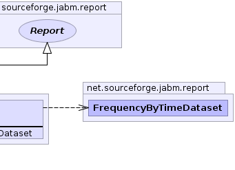
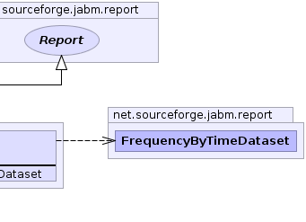

|
 |
|
|||||||||
| PREV CLASS NEXT CLASS | FRAMES NO FRAMES | ||||||||
| SUMMARY: NESTED | FIELD | CONSTR | METHOD | DETAIL: FIELD | CONSTR | METHOD | ||||||||
public interface FrequencyByTimeReport
|
 |
| Method Summary | |
|---|---|
FrequencyByTimeDataset |
getFrequencyByTimeDataset()
|
| Methods inherited from interface net.sourceforge.jabm.report.Report |
|---|
getName, getVariableBindings |
| Methods inherited from interface net.sourceforge.jabm.event.EventListener |
|---|
eventOccurred |
| Method Detail |
|---|
FrequencyByTimeDataset getFrequencyByTimeDataset()
|
|||||||||
| PREV CLASS NEXT CLASS | FRAMES NO FRAMES | ||||||||
| SUMMARY: NESTED | FIELD | CONSTR | METHOD | DETAIL: FIELD | CONSTR | METHOD | ||||||||